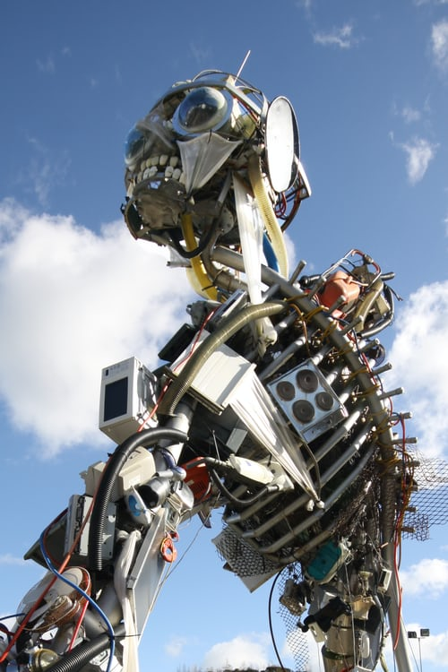
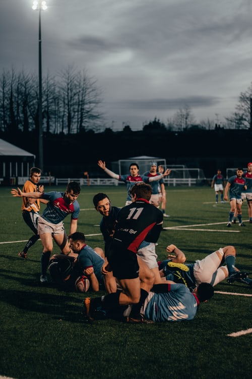

| Pictures | Name OF the Client Dealing | Project information |
 | Project Consultants | Proficient in Highway designs by MX Road (formerly MOSS) software. Digital Terrain Model (DTM), Surface analysis, Geometric design, estimation of quantities and alignment drawings for Highway Projects by using MX Road. Rich experience in Highway design for more than 1400 km of National Highway Roads and 1200Km of other roads. The projects undertaken include widening & upgrading of major highway corridors with latest state of art-sophisticated equipments. Quality Control and preparation of Interim Payment Certificate’s. Traffic studies, road network & bridge inventory studies, axle load survey; pavement evaluation. Geo-technical investigations. Quantity estimation, rate analysis; Checking and review of design documents .Applying engineering techniques and analyzes to the preparation of conceptual, preliminary and final roadway. Provide technical guidance to Mx Designers and Engineers working on a variety of transportation projects. Ability in managing projects from the design stage through to completion together with the ability to take full personal responsibility. |
|  | Infrastructure Project Management Service | Urbanization has given the country rapid growth and contributing towards this growth, GMR Group ventured into this business sector.With a special focus on Special Investment Region, the division leverages on it’s collective experience and expertise in building successful projects across the country.
Currently developing a 2101Ac (850 Ha) multi-product Special Investment Region (SIR) at Krishnagiri, Tamil Nadu and a 10,000 acre port based multi-product Special Investment Region at Kakinada, Andhra Pradesh, the division aims at creating state of the art establishments that is sustainable. |
|  | Sports | Incorporated in 2008, the division was initiated with the belief that sports provides a connect with the community at large. Cricket particularly is celebrated in the country, and to be associated with the sport was the group’s first initiative.
The capital’s IPL franchise, Delhi Capitals, marked the beginning of this venture, followed by the Uttar Pradesh (UP) franchise of the Pro - Kabaddi league - UP Yodha. With a number of local kabaddi tournaments in the region, finding fresh and new local talent is part of the long-term agenda of the business. |